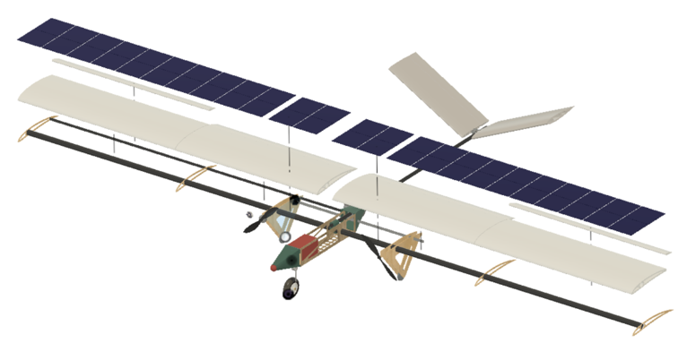
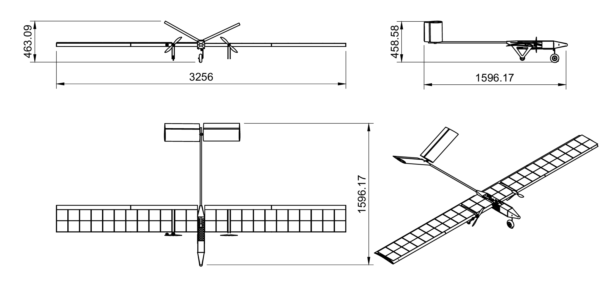
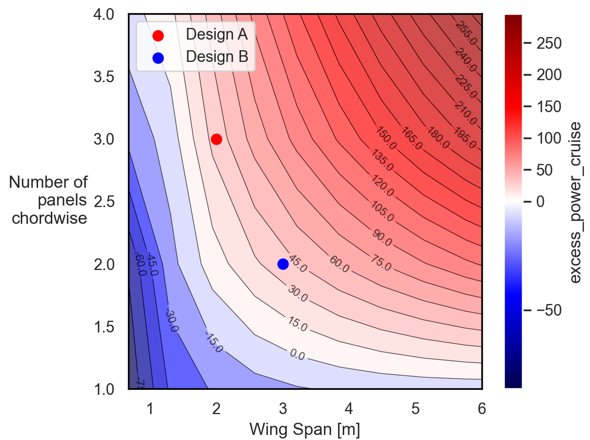
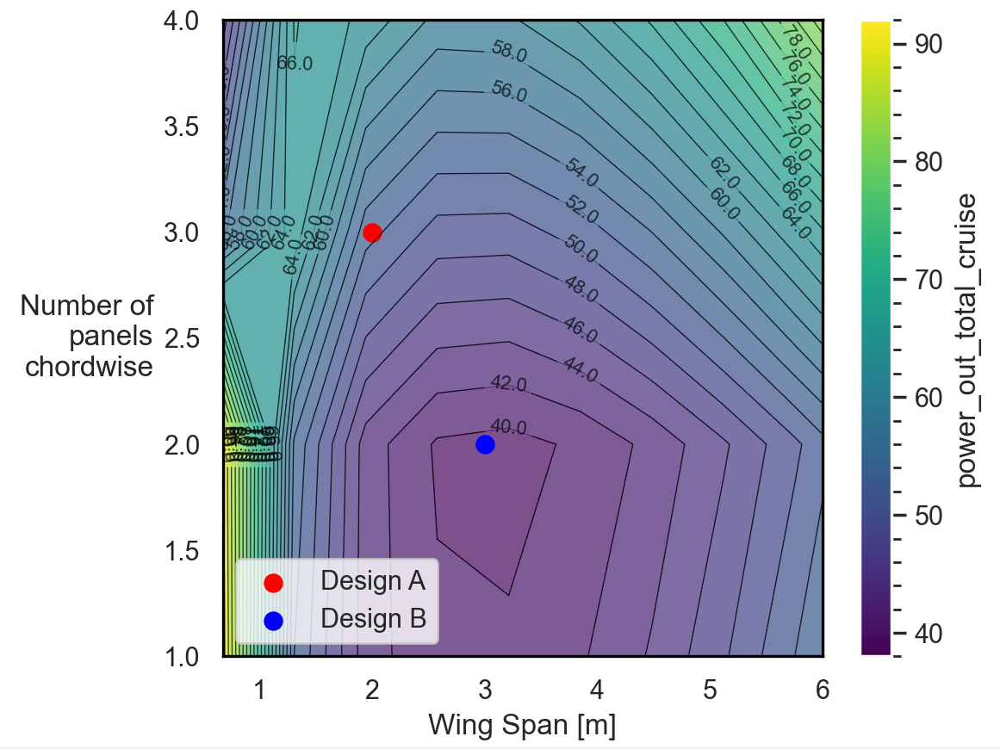
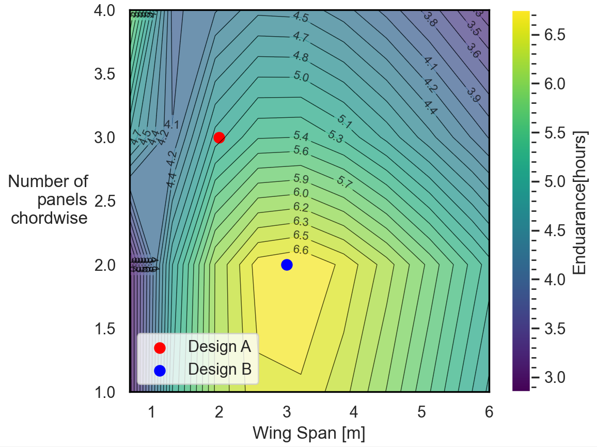
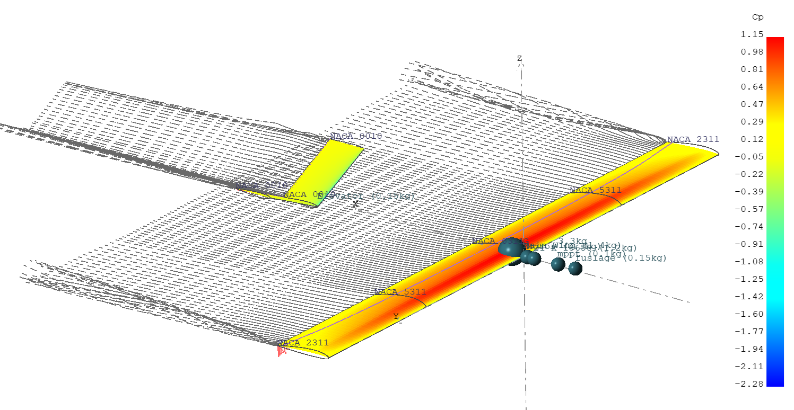
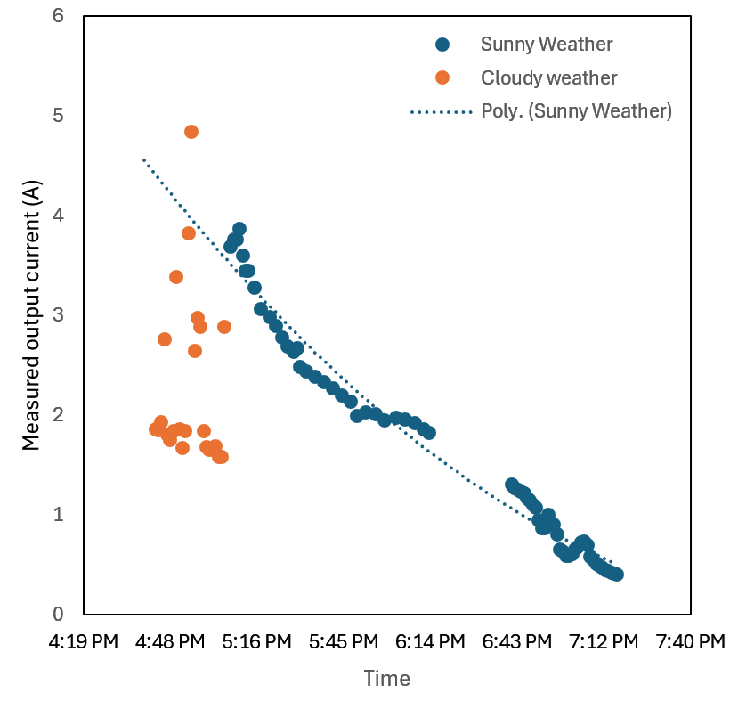
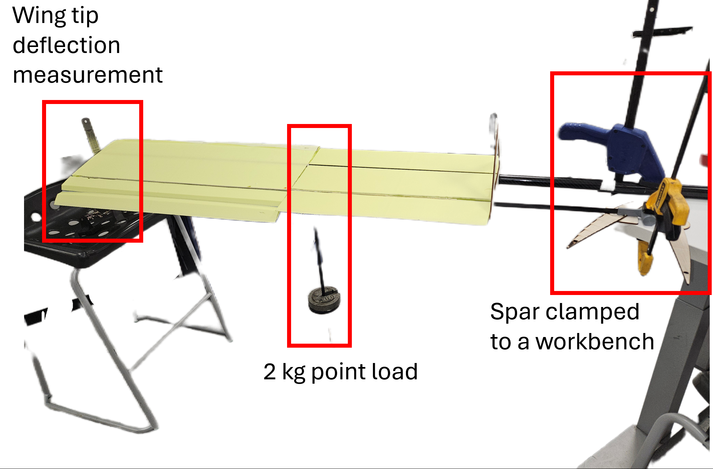
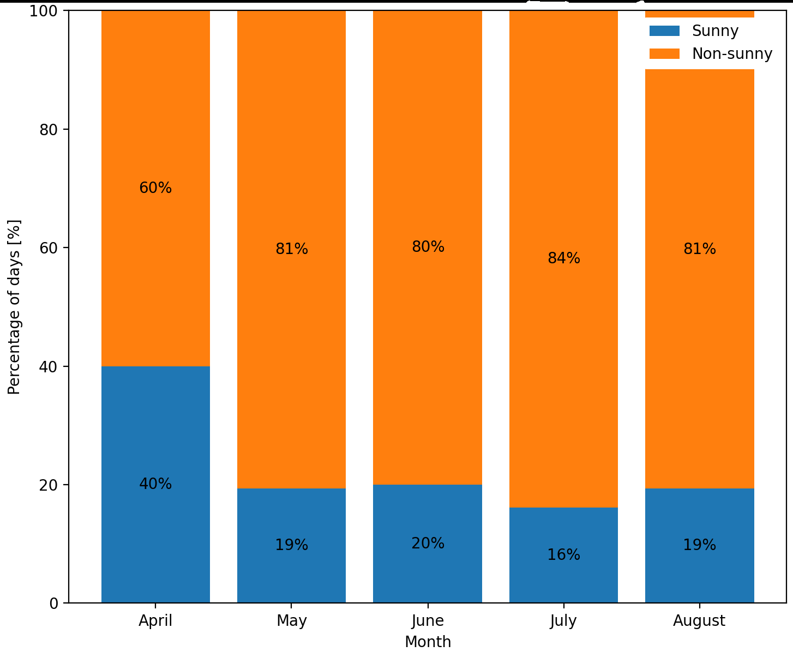

3 × 16 cells
- Span
- 2.0 m
- Aspect ratio
- 5.3
- Predicted L/D
- 9–10
- Cruise power
- ~58 W
Compact and practical, but the shorter span carried a significant induced-drag penalty.
MEng Aerospace Engineering Research · 2026
A coupled feasibility study of a practical, 3 m-span solar-powered UAV—linking aerodynamic efficiency, energy balance, structural flexibility and real-world UK weather.

01 / THE QUESTION
This study tested whether commercially available solar cells, batteries and propulsion components could support a manufacturable long-endurance UAV operating from Guildford, UK.
The goal was a credible baseline constrained by transport, manufacture, a 3 m wingspan and Britain’s variable irradiance—not an idealised aircraft.
02 / DESIGN SELECTION
Both candidates carried 48 cells. Geometry—not cell count—created the performance difference.
Compact and practical, but the shorter span carried a significant induced-drag penalty.
The higher-aspect-ratio layout balanced solar area, efficiency and practical packaging.

03 / DESIGN SPACE
The same design space was interrogated for excess power, aerodynamic efficiency and cruise demand.



04 / ENGINEERING EVIDENCE
Aerodynamic refinement, outdoor solar testing and a calibrated structural model challenged the feasibility result.
NACA 6311 at the root, NACA 5311 at mid-span and NACA 2311 at the tip moved the VLM prediction towards the elliptical target.

The outdoor test captured the same first-order late-afternoon decline as the numerical model, while exposing cloud, shading and temperature sensitivity.

A measured 25 mm tip displacement under a known load calibrated effective bending stiffness before comparison with ASWING.

05 / KEY FINDINGS
Trimmed near 1° angle of attack, with a useful efficient range from approximately 1° to 5°.
Predicted 5g tip deflection; global bending was moderate, but local cell strain remained a risk.
Sunny-day share from April to August 2025 in Guildford—too variable for solar independence.
06 / REAL-WORLD LIMIT
Cloudy test periods reduced current by roughly 60–80%. Historical weather classification showed non-sunny conditions dominated much of the April–August operating window. In Guildford, this aircraft should therefore be described as solar-assisted, not solar-independent.

07 / CONCLUSION
The selected 2 × 24-cell configuration achieved a positive predicted cruise margin under favourable daylight while retaining a practical 3 m span. The 12-hour objective was partially met at feasibility level, but reliable all-day operation has not yet been demonstrated.